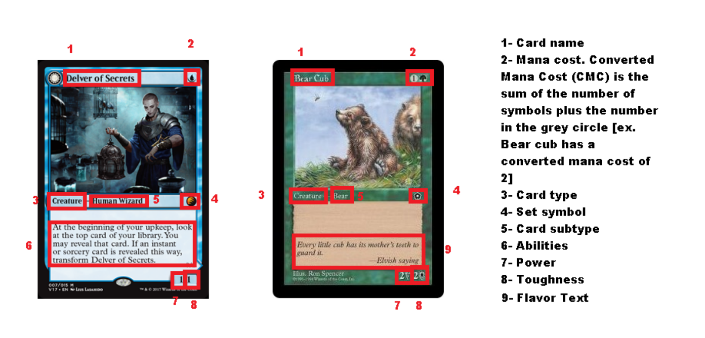

Each card has its own name in magic the gathering. Each card can be identified further by its color(s) in the mana cost. Each card will belong to one or more of the following: White, Blue, Black, Red, Green, or Colorless. The power indicates how much damage a creature can deal and toughness is how much damage a creature can take. Flavor text is lore references that have no impact on the game.

In magic, you use lands to produce mana for spells. All lands are colorless unless otherwise specified and have no converted mana cost and so are said to have a converted mana cost of 0. Lands are played from hand and the act of playing a land (intuitively called playing a land) does not use the area known as the stack. Plains tap to produce 1 White mana, Island produces 1 blue mana, Swamp produces 1 black mana, Mountain produces 1 red mana, Forests produce 1 Green mana, and Wastes produce 1 colorless mana.
The mana pool is a term for a nonspecific area where mana is stored until the end of phases and turns. Mana is used to pay the costs for spells. Every other card type in magic is considered a spell when attempting to be played (called casting). There is no limit to how much mana your mana pool can hold.
Tapping: The term tapping means to rotate a card 90 degrees such that it is clearly distinct from untapped cards (kept vertically). Lands are tapped to produce mana and some other cards have this symbol, the tap symbol to designate that the rotation is needed to use the card's ability. Tapped cards cannot use their tap abilities again until they become untapped. The tap symbol is shown below as the curved arrow.
Magic cards are divided into one of 7 types but may have more than one type. The types are:
- Land
- Creature
- Artifact
- Enchantment
- Planeswalker
- Instant
- Sorcery
Cards known as Permanents are Lands, Creatures, Artifacts, Enchantments, and Planeswalkers. Cards known as spells are any cards that are played that do not have the type 'Land'.
The game of magic the gathering first starts with the starting player being randomly determined. Then Players shuffle up their decks(piles of their cards which will be called their library) face down. As with most card games, the order of ones library should be unknown to the player. Both players begin at the life total of 20 and draw the top 7 cards from their deck, thus forming their hand. Players may view their own hand at this time. If a player does not like their opening hand, they may shuffle their entire hand into their library and draw that many cards minus one. This process repeats until both players are content with their hands. With this, the game of Magic the Gathering may begin
The player who goes first then proceeds with the turn order shown in the accompanying chart. The starting player does not draw a card for their first turn. The main phases are when lands are played and spells are cast in order to advance the player's strategy. Instants are the only card type that may be played at all allotted phases, except the untap step, unless otherwise noted by a card. A player may only play one land per turn unless granted extra amounts. The player whose turn it is is known as the active player. The other player(s) are known as non-active players. This is to give an order of casting spells and responding to spells.
The
Stack: the stack is an area in which spells go to where they can be interacted with by all players. All card types can only be played when the stack is empty except for instants, or unless otherwise noted. The stack occurs in first in, last out order and can be added to and removed from dynamically. When announcing a spell to cast, you announce and show the card to be put onto the stack. Then you designate any modes to be attributed with the card. most cards that require a mode will have bulletpointed options to select from. Then legal targets must be decided upon. A target is any card matching the type indicated on the spell. Cards with Hexproof cannot be targeted by the opposing player(s) and cards with Shroud cannot be targeted by any player. If a card requires it, you then decide how to split the effect. After that, the total cost of the card is determined, by looking at the mana cost, applying any mana additions, then reductions, then substitutions if applicable. Next, mana abilities are able to be activated. After that, the spell must be paid for in full using mana from the mana pool. Each color must be paid for by its corresponding color, the diamond symbol to the right must be paid for using colorless mana, and any other cost may be paid using any color of mana including colorless. After a spell is cast it remains on the stack, the player who cast the spell gets a chance to play more instant cards or let the opponent play spells.
If both players decide to not do anything, the topmost spell resolves. if it is an instant or sorcery apply its ability then put it into a single pile known as the graveyard. Otherwise put it onto the battlefield. Then repeat the cycles of priority with the active player getting the chance to play cards first. However, if the spell is countered, the card is put into the graveyard and does not apply its effects. The act of having the opportunity to play cards is known as priority. If the stack is empty and both players decide to pass priority, the next phase or step begins.
The Combat Step: Combat proceeds as follows. First the beginning of combat step occurs. this is the last chance for players to cast spells before creatures attack. Then the active player may choose to declare an attack with any creature in the vertical position (untapped) that is not summoning sick. Summoning sickness affects creatures that were just played and lasts until the creature's controller begins a turn with that creature under their control. All selected creatures are then tapped unless they contain the ability vigilance. Once the active player is satisfied with the attackers, the player then decides if the creature will attempt to damage the opposing player, or a planeswalker they control. After that, each player gets a round of priority (the chance to cast spells). When priority passes from all players, the player being attacked (or their planeswalker being attacked) decides if they want to block and if so, which creatures to block. After another priority cycle from each player, damage is calculated. unblocked creatures deal damage to their intended targets and blocked creatures deal damage to each other.
Terms and keywords that affect combat:
- lethal damage: an amount of damage greater than or equal to the toughness of a creature, or your life total. Creatures dealt lethal damage die
- die: put into the graveyard from the battlefield
- trample: if this creature assigns lethal damage to a creature, excess damage may be subtracted from the opponent's life total
- vigilance: attacking does not cause this creature to become tapped
- haste: this creature is unaffected by summoning sickness
- deathtouch: if this creature assigns damage to a creature successfully (in combat or otherwise), the creature is treated as though lethal damage has been assigned
- first strike: creatures with this ability deal damage first
- double strike: this creature deals damage both when creatures with first strike deal damage, and when all other creatures deal damage
- indestructible: this creature does not die as a result of lethal damage
- regenerate: if this creature were to die, instead remove all damage marked, remove it from combat if applicable, and tap it
- protection: this creature cannot be damaged from, enchanted or equipped with, blocked by, or targeted with any source it has protection from
Attacking creatures that have been blocked apply damage as such: The attacking creature assigns its damage to the blocking creature(s) toughness equal to it the attacking creature's power. The defending creature simultaneously assigns its power as damage to the attacking creature's toughness. Otherwise, the power is subtracted from the opponent's health.
If a creature's toughness ever becomes 0 or less, or a spell that says destroy is allowed apply its effect, the creature dies.
After each end step, the next player in turn order repeats the flowchart.